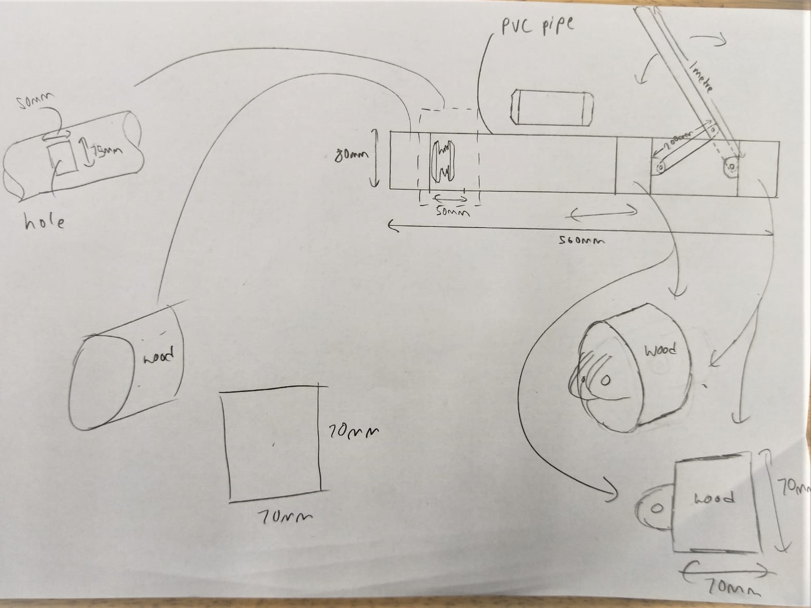
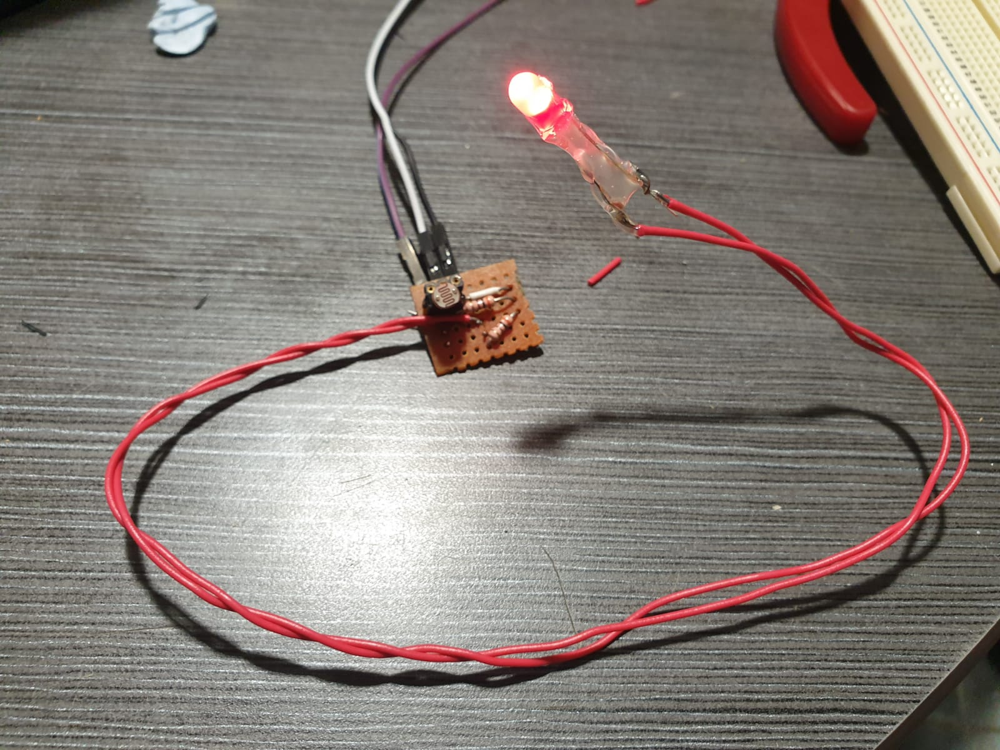

Can-queror!
IoT Aluminium Recycling Machine
Overview.
Can-queror is a IoT Aluminium recycling maching. It is a can crusher that logs the number of cans you donated and link it to your Ez-link card's UID through the cloud.
It is a mean of giving users incentives by rewarding them with Ez-link credits in turn for recycling cans. Our prototype is just a proof of concept so it can only read the UID of unencrypted RFID card and use a cloud database system to show how we would send the data to the cloud for EZ-link to track the number of can donation.
Hardware.
The crusher of cans, the giver of dreams
Our can crusher mechanism is made to make can crushing an ease. It leverages the power of physics by converting rotational force to linear force that is used to crush cans like crushing bugs.
Electronics.
For our electonics, we used the unholy couple of LED and LDR to detect the can when it is falling
Program.
For our edge proccesing, we are using an Esp32 to read from the RFID, interface with the LDR/LED pairing and connect to the internet to send the appropriate MQTT messages to our backend hosted on AWS
Our backend is carried by the mighty AWS to host everything without the hassle of dealing with anymore hardware, the picture illustrates the build:

Lambda, our trusted squire is issued to handle the request of the MQTT messages and to update the correct data on our table hosted on the one and only noSQL database DYNAMODB
Demo.
And finally, to show our system in spectacular action. Our wizards have managed to draw the essence of lights and make the sequence immortal
Demo video